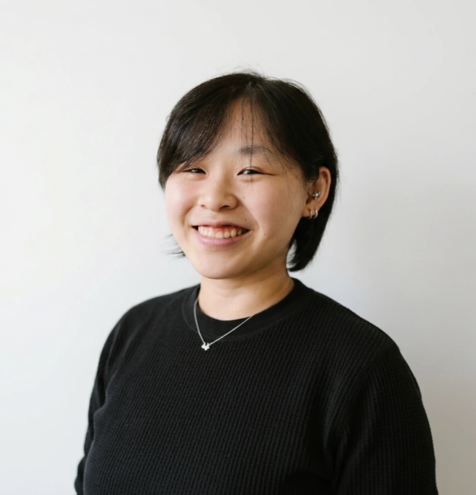

Hi, I’m
Wei Yi Wong
An undergraduate attending Wentworth Institute of Technology pursuing a degree in Industrial Design. I am passionate about creating innovative and functional designs that blend aesthetics with usability. I love hands-on prototyping, product development, and problem-solving.

Education
Wentworth Institute of Technology
2023–2028
Undergraduate
University of Massachusetts Boston
2023–2023
Undergraduate
Bachelor of Science and Math
Skills
- Modelmaking
- Rhinoceros 3D
- Solidworks
- Adobe Illustrator
- Adobe InDesign
- Adobe Photoshop
- Keyshot
Experience
Digital Ready Architecture Studio / Student Learner
June 2023 – August 2023
Led a diverse team of teens (ages 16–20) through immersive college-level design coursework to model, diagram, and build a sturdy architectural kiosk prototype. Collaborated across competitive studio teams to successfully pitch and present our final structure to college professors.
Formlabs Project / TechBoston Academy
April 2022 – June 2022
Managed a creative, multidisciplinary team in a studio competition to take a product from initial design to a physical working prototype. Integrated 3D CAD modeling and code to deliver a structurally functional design to the class.
Sales Associate / Uniqlo
April 2026 – Present
Collaborate closely with store managers and sales associates to guarantee customer satisfaction and sustain both regularity and consistency in operational tasks required for the fulfillment of daily goals.
Nurse Caregiver / Trinity Church in the City of Boston
April 2023 – Present
Maintained a secure space for toddlers (ages 1–4), providing attentive personal care while promoting key social skills like cooperation and active communication. Supported early childhood development through positive reinforcement and structured daily routines.
Barista / Cafe Darq
February 2024 – March 2026
Mastered complex drink preparation in a high-volume setting while driving operational efficiency, resolving customer needs, and mentoring new hires to uphold high service standards.
Boston, MA 617-982-4892 w.ong.w.5646@gmail.com